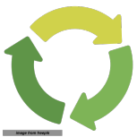

Done correctly , data science solutions developed for enterprise applications can have a rinse and repeat nature. The rinse and repeat phrase implies that the solution recipe to develop the next version of the solution, for example for the next business time period, is going to be similar. The challenge lies in getting to a version of a solution that has this rinse and repeat nature. The fact that getting that first model out is very challenging is consistent with results from surveys such as this from kd-nuggets.
I am a seasoned data scientist looking for remote consulting data science projects. The services section of this website provides some representative services that I can provide. These are representative. If you have a business task that you want to augment or implement with data science, I would appreciate a conversation to explore if this task falls in my wheelhouse. I have developed a simple open source tool to document and maintain analytics and machine learning projects . Please check this repository for some sample recipes created with this tool. The quality of open-source data science and online collaboration tools available today make remote work a plausible model for the right match.